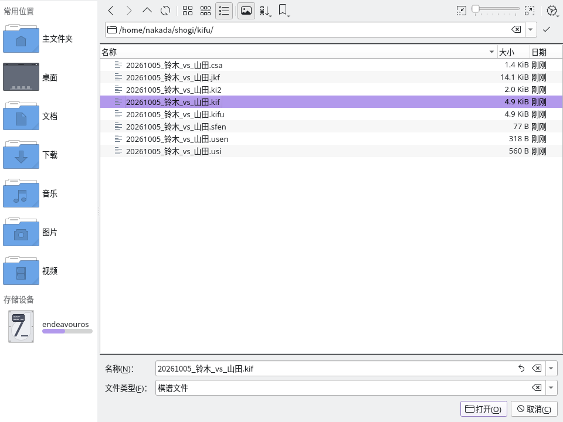
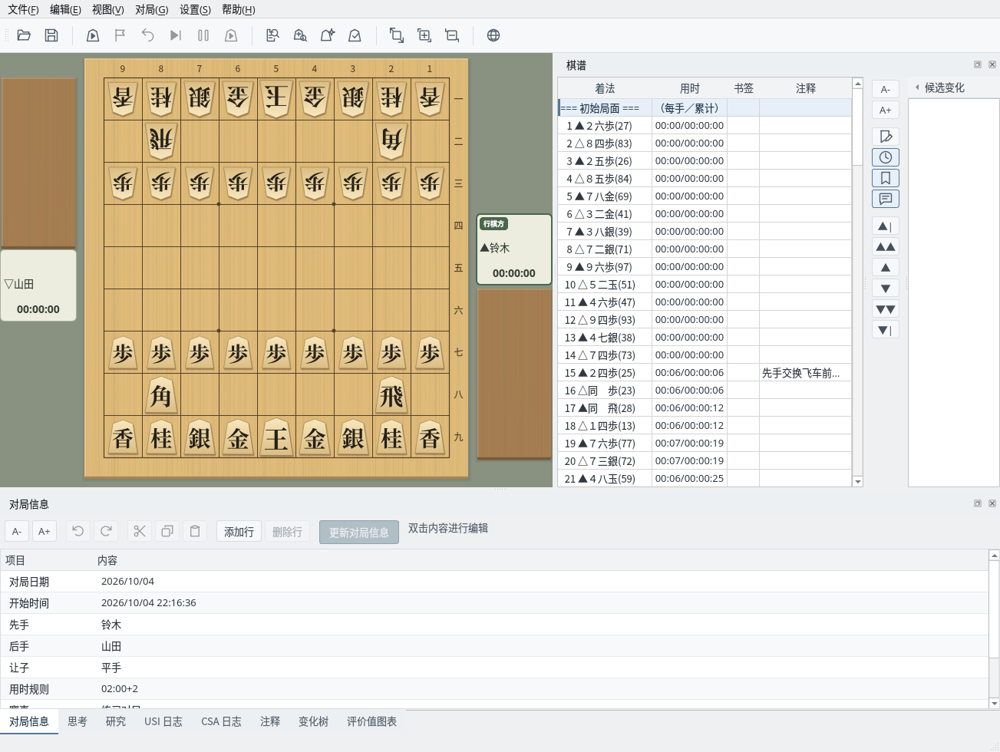
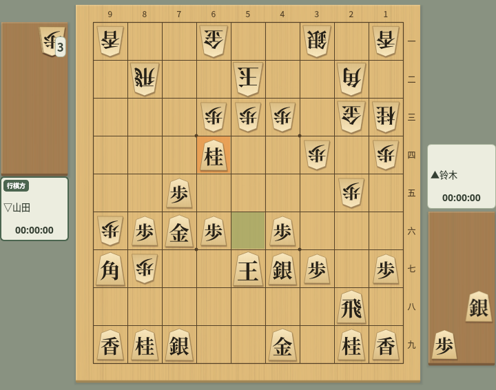
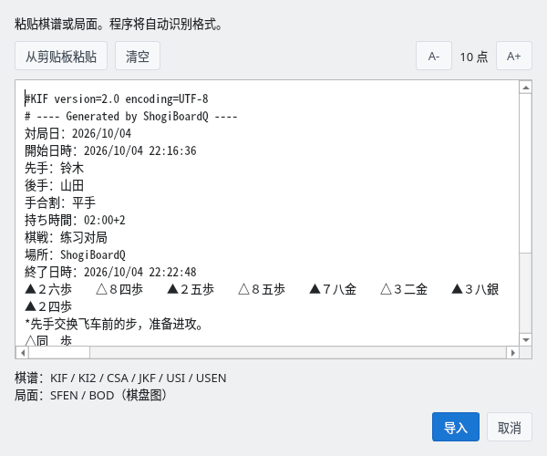

以多种格式读取、保存和复制棋谱
截图在 Linux 上以简体中文界面拍摄。
支持主要的棋谱格式，也能读取带变化的棋谱
可以读取以下棋谱格式。
| 格式 | 扩展名 | 说明 |
|---|---|---|
| KIF | .kif .kifu | Kifu for Windows 的标准格式，记录手数、着法和用时 |
| KI2 | .ki2 .ki2u | KIF 的简化格式，将着法横向排列记录 |
| CSA | .csa | 日本计算机将棋协会（CSA）的标准格式，以坐标记录 |
| JKF | .jkf | JSON 棋谱格式，以 JSON 结构表示变化 |
| USI / SFEN | .usi .sfen | USI 着法序列，或仅包含局面的 SFEN |
| USEN | .usen | USEN 压缩格式，紧凑地编码棋谱 |
从菜单“文件”→“打开…”打开文件选择对话框（打开棋谱文件）。可以在“文件类型”中筛选要显示的格式。

文件选择对话框：可选择 KIF、KI2、CSA、JKF、USI、SFEN、USEN 格式的文件
读取文件后，“棋谱”栏会显示着法和用时，棋盘显示初始局面。可以通过棋谱栏或导航按钮移动到任意局面。对局者、日期、让子等对局信息也会自动读取。

读取棋谱后：棋谱栏显示着法和用时
以下是从平手开始走了“７六歩・３四歩・２六歩”、尚未终局的 3 手棋谱（示例中的日文为各格式规定的记法）。不同格式能记录的信息（对局者、用时等）各不相同。
手合割：平手
先手：鈴木
後手：山田
手数----指手---------消費時間--
1 ７六歩(77) ( 0:02/00:00:02)
2 ３四歩(33) ( 0:02/00:00:02)
3 ２六歩(27) ( 0:02/00:00:04)先手：鈴木
後手：山田
▲７六歩 △３四歩 ▲２六歩'CSA encoding=UTF-8
V3.0
N+鈴木
N-山田
PI
+
+7776FU
T2
-3334FU
T2
+2726FU
T2{
"header": {
"先手": "鈴木",
"後手": "山田"
},
"moves": [
{},
{"move":{"from":{"x":7,"y":7},
"to":{"x":7,"y":6},
"color":0,"piece":"FU"}},
{"move":{"from":{"x":3,"y":3},
"to":{"x":3,"y":4},
"color":1,"piece":"FU"}},
{"move":{"from":{"x":2,"y":7},
"to":{"x":2,"y":6},
"color":0,"piece":"FU"}}
]
}position startpos moves 7g7f 3c3d 2g2f~0.7ku2jm6y2.可以用 6 种格式保存棋谱
从菜单“文件”→“另存为…”可以将棋谱以任意格式保存到文件。省略扩展名时，会加上保存对话框中所选筛选器的扩展名；输入扩展名时，由该扩展名决定保存格式。
| 格式 | 扩展名 | 字符编码 |
|---|---|---|
| KIF 格式 | .kif / .kifu | Shift_JIS / UTF-8 |
| KI2 格式 | .ki2 / .ki2u | Shift_JIS / UTF-8 |
| CSA 格式 | .csa | UTF-8 |
| JKF 格式 | .jkf | UTF-8 |
| USEN 格式 | .usen | UTF-8 |
| USI 格式 | .usi | UTF-8 |
KIF、KI2、JKF、USEN 可以保存变化。CSA、USI 只保存本谱，KI2 不保存用时。USI、USEN 不保存对局者、注释和用时，USEN 能表示的终局结果也有限制。将 CSA 以毫秒为单位的用时转换为 KIF、JKF 时，不足 1 秒的部分会被舍去。
保存为 .kif、.ki2（Shift_JIS）时，如果对局者或注释中含有 Shift_JIS 无法表示的字符（部分简体字、繁体字或表情符号等），会显示这些字符并询问是否“以 UTF-8 保存”。以 UTF-8 保存时，文件第一行会记录“encoding=UTF-8”。若要始终以 UTF-8 保存，请选择 .kifu、.ki2u。
CSA 文件中有以“/”分隔的多个棋谱时，只读取第一个棋谱。
USI 格式棋谱末尾的终局代码是用于保存棋谱的扩展，不属于与引擎通信用的 USI“position”命令规范。
各格式的资料（日文或英文）：KIF 规范、棋谱记法（KI2 的着法记法）、CSA V3.0 规范、JKF 规范、USI・SFEN 规范、USEN 资料。
菜单“文件”→“保存”会以扩展名对应的格式，覆盖保存到最近读取或保存的文件。未设置保存位置、从粘贴或局面集导入、或读取了 .sfen 文件时，会打开“另存为…”。对局结束后的自动保存位置可以在对局对话框中指定。
棋谱有未保存的修改时，在读取其他棋谱、以新棋谱开始对局、重置为初始画面或退出程序时，会确认是否保存。选择“取消”，或保存被中止、失败时，该操作也会中止。
可以将棋谱、局面、棋盘图片复制到剪贴板，也可以粘贴棋谱
从菜单“编辑”→“复制棋谱”可以将当前棋谱以各种格式复制到剪贴板，并粘贴到其他程序中使用。
| 菜单项 | 内容 |
|---|---|
| KIF 格式 | 以 KIF 格式复制整个棋谱 |
| KI2 格式 | 以 KI2 格式复制整个棋谱 |
| CSA 格式 | 以 CSA 格式复制整个棋谱 |
| USI 格式（截至当前着法） | 以 USI 格式复制到当前显示的着法为止 |
| USI 格式（全部） | 以 USI 格式复制整个棋谱 |
| JSON 棋谱格式 | 以 JKF（JSON）格式复制整个棋谱 |
| USEN | 以 USEN 压缩格式复制整个棋谱 |
从菜单“编辑”→“复制局面”可以将当前局面复制到剪贴板。
| 菜单项 | 内容 |
|---|---|
| SFEN 格式 | 以 SFEN 字符串复制当前局面 |
| BOD 格式 | 以文本棋盘图（BOD）复制当前局面 |
菜单“编辑”→“复制棋盘图片”会将当前棋盘作为图片复制到剪贴板，方便粘贴到博客或解说文章中。

复制棋盘图片：将棋盘作为图片复制到剪贴板
菜单“编辑”→“粘贴棋谱…”会打开粘贴棋谱对话框。在文本框中粘贴棋谱，或点击“从剪贴板粘贴”，然后点击“导入”，程序会自动识别格式并读取。

粘贴棋谱对话框：自动识别 KIF、KI2、CSA、USI、JKF、USEN、SFEN、BOD 格式
| 格式 | 自动识别的依据 |
|---|---|
| KIF | 包含“手数----”，或有以手数和目标位置开头的行。仅有“手数”“指し手”等词不会判定为 KIF |
| KI2 | 以 ▲、△、▽、☗、☖ 开头并后接目标位置的着法 |
| CSA | V2/V3 版本行或注释行、PI/P 局面数据、对局者或对局信息，或以 + 或 - 开头并后接数字的着法行 |
| USI | 以 position、startpos、sfen 开头的行，或 SFEN 局面后接着法。也接受 startpos moves ... |
| JKF | 以 { 或 [ 开头的 JSON 会按 JKF 检查。导入时需要 JKF 对象，仅有 JSON 数组会被拒绝 |
| USEN | 符合以 ~ 分隔的手数与编码序列的 USEN 结构。注释或 URL 中的 ~ 不足以判定 |
| SFEN | 由棋盘、行棋方、持驹、手数 4 个字段组成的局面字符串。带有 sfen 等前缀时会识别为 USI |
| BOD | 带有持驹标题、边框或格子记法，且没有着法列表的局面图 |
无法识别的文本会尝试按 KIF 读取。识别格式后会检查内容，无法导入时会显示错误。